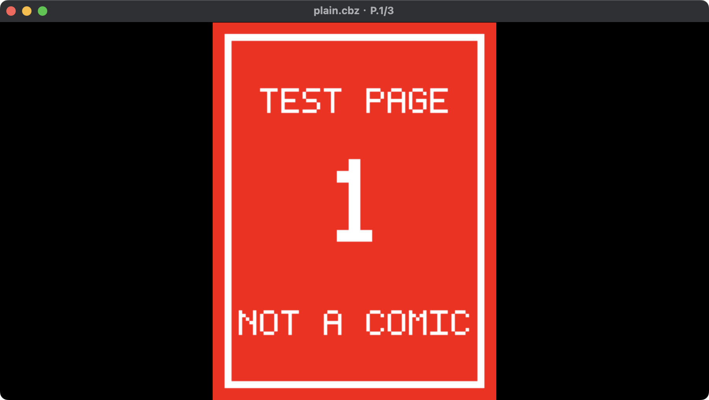
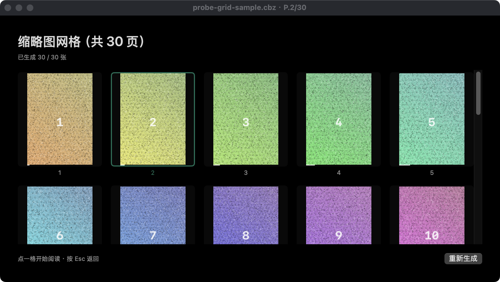
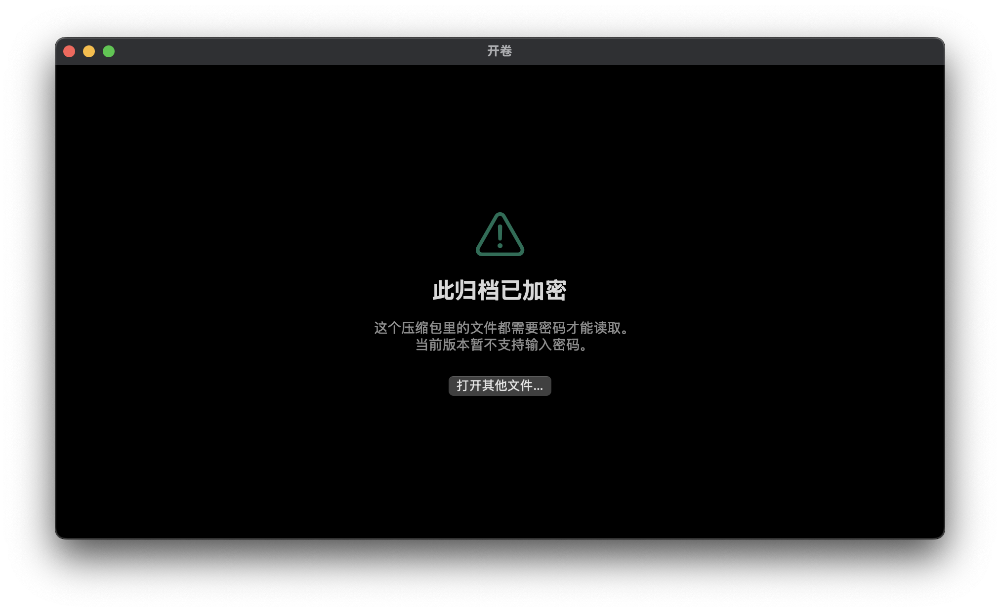
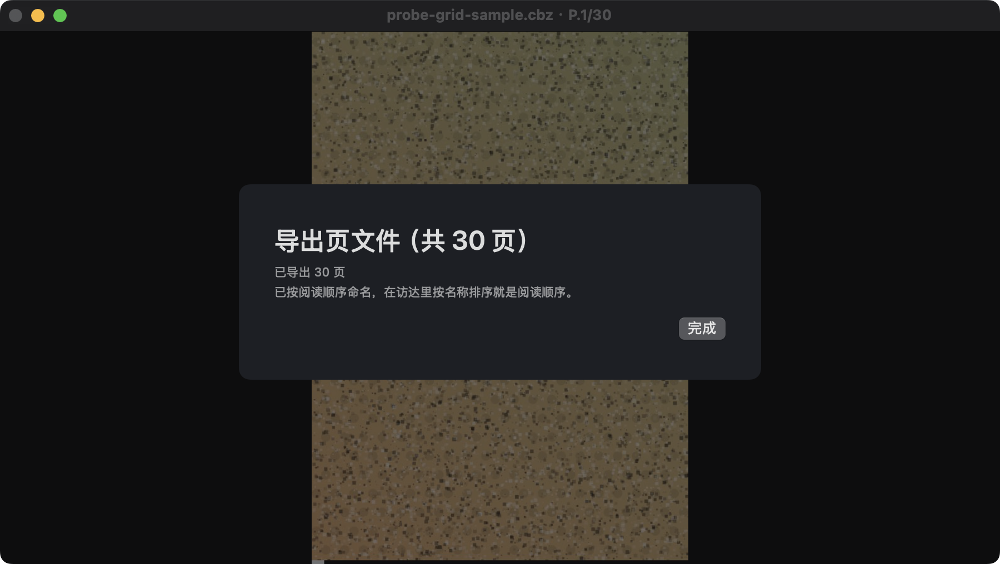

开卷 Unroll Unroll
macOS 原生漫画归档阅读器。双击 .cbz / .cbr / .cb7 / .cbt，或者直接丢一个装满图片的文件夹进去就能看——不解压、不建图库、不留痕迹。
A native macOS comic reader. Double-click a .cbz / .cbr / .cb7 / .cbt archive, or point it at a folder of images. No unzip, no library, no leftovers.
直接看Watch it work
它解决什么Why it exists
不解压Never extracts
大多数工具要先解到临时文件夹再打开。500 MB 的档只为读第 1 页就先写半个 G。
Most tools unpack to a temp folder first. A 500 MB archive writes half a gigabyte just to read page 1.
单次顺序扫描Single sequential pass
第 200 页和第 1 页一样快。逐页重开的写法在 solid 7z 上会退化到 O(n²)——实测 150 页慢 71 倍。
Page 200 costs the same as page 1. Reopening per page degrades to O(n²) on solid 7z — measured 71× slower at 150 pages.
像素级内存预算Pixel-budgeted cache
最多 8 张全分辨率 + 200 M 像素。被淘汰的页降级成缩略图而非直接扔掉，往回翻是瞬时的。
At most 8 full-resolution pages and 200 M pixels. Evicted pages are demoted to a thumbnail, not dropped — scrubbing back is instant.
加密档Encrypted archives
zip / rar 加密档会直接问密码；密码只驻留内存，不写盘、不记住、不进崩溃报告。
Encrypted zip/rar prompts for a password. It lives in memory only — never written to disk, remembered, or logged.
Quick Look 集成Quick Look
Finder 里按空格看封面和页数，文件图标就是封面本身（两个扩展：缩略图 + 预览）。
Press Space in Finder to see the cover and page count; the file icon is the real cover too. Two bundled extensions.
完整性检查Integrity check
只读字节、不解码，坏页直接点名第几页——而不是让你自己一页页读出来发现。
Read-only, no decode pass, and it names the page numbers that fail instead of leaving you to find them.
界面Interface




实测数字Measured
2.6 MBApp 体积App size
0第三方依赖Third-party deps
0.15 GB200 页峰值内存Peak, 200 pages
71×优于逐页重开vs. reopen-per-page
0网络权限Network entitlement
要求Requirements
macOS 14 Sonoma 及以上。免费、开源（MIT），无需账号、无需联网。 macOS 14 Sonoma or later. Free and MIT-licensed — no account, no network required.